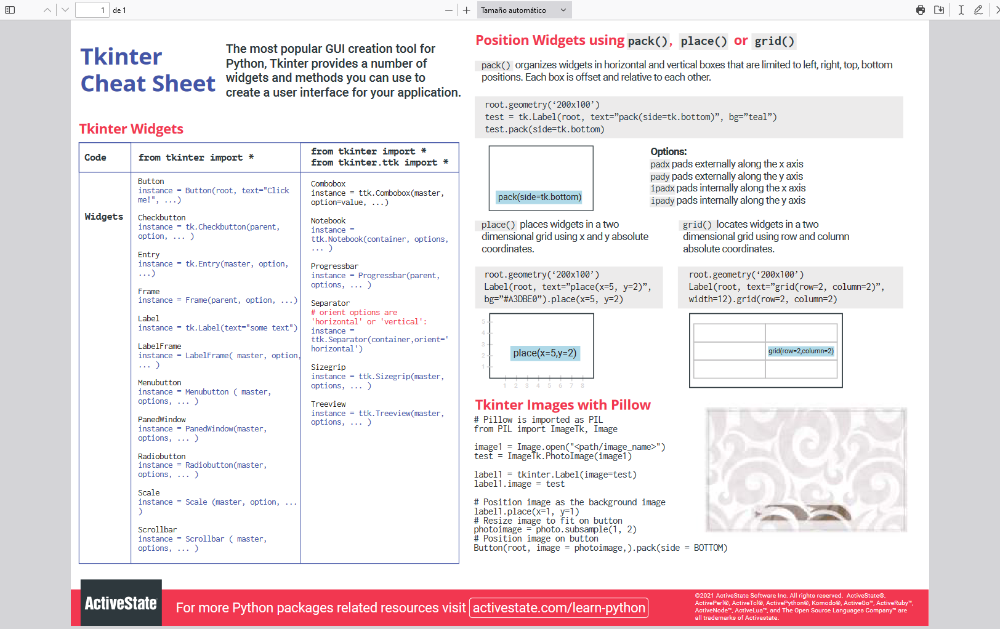

Cheatsheet of the day
The tkinter cheatsheet by Activestate provides a clear way in a single pdf page the basic tips of Tkinter features

Download the Tkinter cheat sheet here:
Download now [PDF]Cheat sheet library main site
The cheat sheet library is a free project to download interesting cheat sheet documents to help you on you day to day projects and to keep in your working table as presnet and future references
The "indispensables"
The vscode keyborad shortcut reference
Vscode is the world's popular IDE for programming and with thousand of plugins that lets you program with every language you can imagine
Download hereThe phpstorm keyborad shortcut reference
PhpStorm is the best IDE for php prorgraming in the world, form JetBrains company
Download here